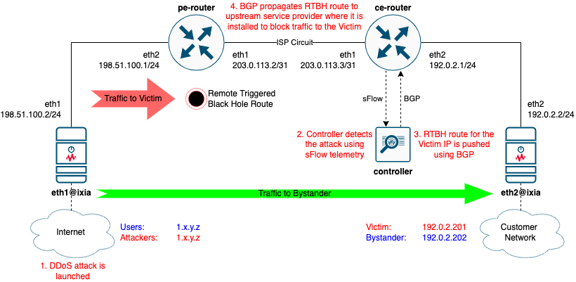

Remote Triggered Black Hole Scenario
Overview
Remote Triggered Black Hole (RTBH) is a common DDoS mitigation technique. It uses BGP anouncements to request an ISP to drop all traffic to an IP address under a DDoS attack.
Read a blog post dedicated to this scenario.

Prerequisites
- Linux host or VM with sudo permissions and Docker support. See some ready-to-use options below
gitandbuild-essentialpackages - how to install depends on your Linux distribution- Docker
- Containerlab
- Access to the Linux host from your computer over TCP ports 22 (SSH), 8008 (DDoS Protect Dashboard) and 8080 (Graphite topology visualization)
Clone the repository
-
Clone this repository to the Linux host where you want to run the lab. Do this only once.
-
Navigate to the lab folder
Prepare a gosnappi container image
Run the following only once, to build a container image where go test command would execute. This step will pre-load all the Go modules needed by the test into the local gosnappi image.
Deploy the topology with Containerlab
Open DDoS Protect Dashboard
As the lab is being deployed, in Containerlab output you should see a line like this:
DDoS Protect Dashboard 🛡️ http://some-ip-address:8008/app/ddos-protect/html/index.html
Open the link in the browser to see the DDoS Protect Dashboard
Run OTG Test
Execute the test by running go test in clab-rtbh-gosnappi container. Note, it will take some time for Golang to compile the test binary, so expect a delay before the test starts running.
DMAC=`sudo docker exec clab-rtbh-pe-router vtysh -c 'sh interface eth2 | include HWaddr' | awk "{print \\$2}"`
sudo docker exec -it clab-rtbh-gosnappi bash -c "go test -dstMac=${DMAC}"
Destroy the lab
Options for Linux VM deployment for Containerlab
Containerlab VM deployment on Mac using Multipass
-
If you're on Mac, an example below can be used to create an Ubuntu 20.04LTS VM
otg-demo, using Multipass. Ubuntu 22.04 is not yet supported for this test. -
Delete the VM after testing is done
Containerlab VM deployment in Google Cloud
-
Create a VM in a default VPC, with needed firewall rules and all the nessesary components
MYIP=`curl ifconfig.me` gcloud compute firewall-rules create otg-demo-allow-8008 --description="Allow tcp 8008 ingress to any instance tagged as otg-demo" --direction=INGRESS --priority=1000 --network=default --action=ALLOW --rules=tcp:8008 --source-ranges="$MYIP/32" --target-tags=otg-demo gcloud compute firewall-rules create otg-demo-allow-8080 --description="Allow tcp 8080 ingress to any instance tagged as otg-demo" --direction=INGRESS --priority=1000 --network=default --action=ALLOW --rules=tcp:8080 --source-ranges="$MYIP/32" --target-tags=otg-demo gcloud compute instances create otg-demo \ --subnet=default \ --machine-type=e2-standard-8 \ --image-family=ubuntu-2004-lts \ --image-project=ubuntu-os-cloud \ --boot-disk-size=30GB \ --boot-disk-device-name=otg-demo \ --tags=otg-demo gcloud compute ssh otg-demo sudo apt update && sudo apt install docker.io build-essential -y bash -c "$(curl -sL https://get.containerlab.dev)" -
Delete all resources and the VM after testing is done (run them one by one, as you'll need to confirm it is OK to delete)
Misc
Topology Visualization
As part of the lab topo.yml definitions, there is a topology visualization module included, called Graphite. As the lab is being deployed, in Containerlab output you should see a line like this:
Graphite visualization 🎨 http://some-ip-address:8080/graphite
Open the link in the browser to see a graphical representation of the topology.
CLI access to nodes
# pe-router
sudo docker exec -it clab-rtbh-pe-router vtysh
# ce-router
sudo docker exec -it clab-rtbh-ce-router vtysh
# ixia
sudo docker exec -it clab-rtbh-ixia sh
# controller
sudo docker exec -it clab-rtbh-controller sh
Credits
Original lab design: